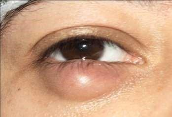

Part I · Hordeolum
Hordeolum internum (Infected chalazion)
Definition & types
- Acute, suppurative inflammation of the Meibomian gland.
- May be primary — or secondary due to infection of a chalazion (acute chalazion).
- Causative organisms and predisposing factors: as in blepharitis.
Clinical picture
- The same as in a stye, but pain is more severe — the Meibomian gland is larger and embedded in the tarsus, making pus under tension.
- The swelling is away from the lid margin and not related to the eyelashes.
- A yellow spot appears on the conjunctival side.
Treatment
Like that for a stye, but evacuation may be needed through a vertical or cruciate incision on the conjunctival side.
